Distributed Relative Formation and Obstacle Avoidance with Multi-agent Reinforcement Learning
Authors
- Yuzi Yan (EE, Tsinghua University) yan-yz17@tsinghua.org.cn
- Xiaoxiang Li (EE, Tsinghua University) lxx17@mails.tsinghua.edu.cn
- Xinyou Qiu (EE, Tsinghua University) qxy18@mails.tsinghua.edu.cn
- Jiantao Qiu (EE, Tsinghua University) qjt15@mails.tsinghua.edu.cn
- Jian Wang (EE, Tsinghua University) jian-wang@tsinghua.edu.cn
- Yu Wang (EE, Tsinghua University) yu-wang@tsinghua.edu.cn
- Yuan Shen (EE, Tsinghua University) shenyuan_ee@tsinghua.edu.cn
Abstract
Multi-agent formation as well as obstacle avoidance is one of the most actively studied topics in the field of multi-agent systems. Although some classic controllers like model predictive control (MPC) and fuzzy control achieve a certain measure of success, most of them require precise global information which is not accessible in harsh environments. On the other hand, some reinforcement learning (RL) based approaches adopt the leader-follower structure to organize different agents’ behaviors, which sacrifices the collaboration between agents thus suffering from bottlenecks in maneuverability and robustness.
In this paper, we propose a distributed formation and obstacle avoidance method based on multi-agent reinforcement learning (MARL). Agents in our system only utilize local and relative information to make decisions and control themselves distributively. Agents in the multi-agent system will reorganize themselves into a new topology quickly in case that any of them is disconnected. Our method achieves better performance regarding formation error, formation convergence rate and on-par success rate of obstacle avoidance compared with baselines (both classic control methods and another RL-based method). The feasibility of our method is verified by both simulation and hardware implementation with Ackermann-steering vehicles
Contents
RenderingHardware Implementation
Method
Results
Rendering
3 agents (triangle)
| 3 agents in level-0 obstacle scenario | 3 agents in level-1 obstacle scenario | 3 agents in level-2 obstacle scenario |
|---|---|---|
| 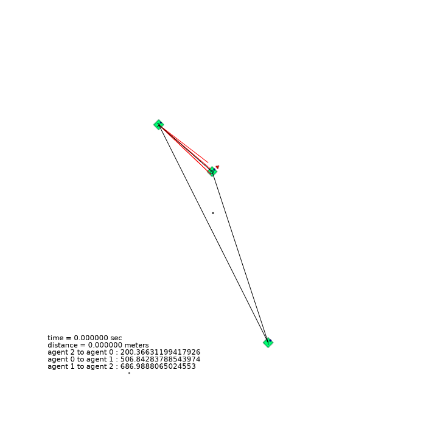 | 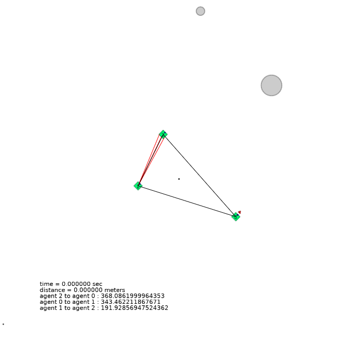 |  |
4 agents (square)
| 4 agents in level-0 obstacle scenario | 4 agents in level-1 obstacle scenario | 4 agents in level-2 obstacle scenario |
|---|---|---|
| 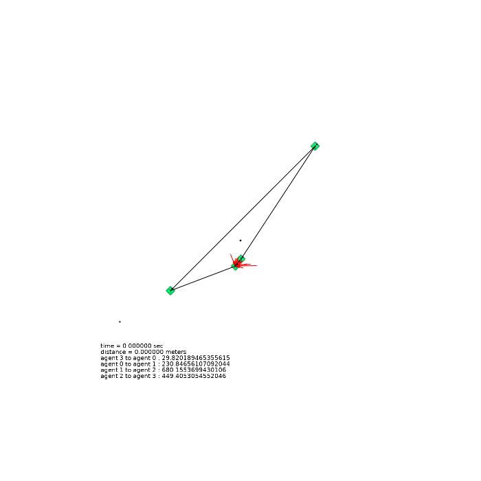 | 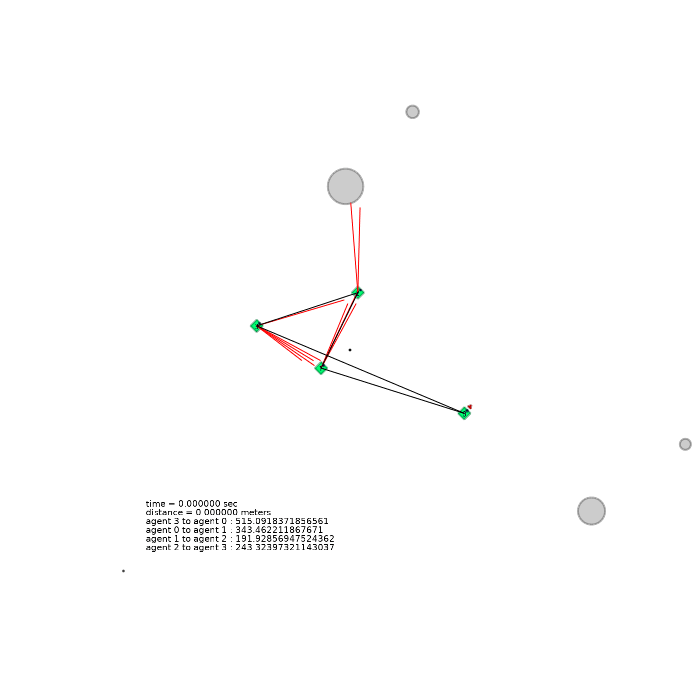 | 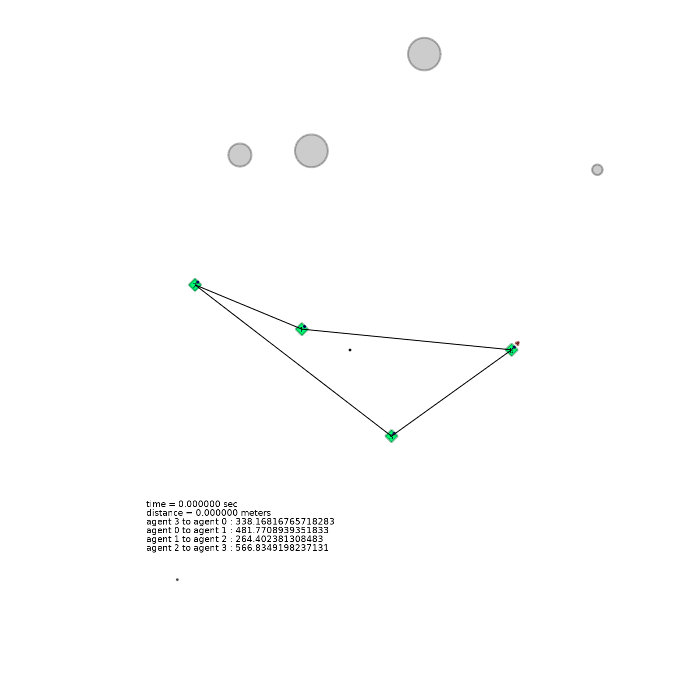 |
Formation Adaptation
| formation adaptation when agents die | MVE relative triangle formation | MVE relative triangle formation |
|---|---|---|
| 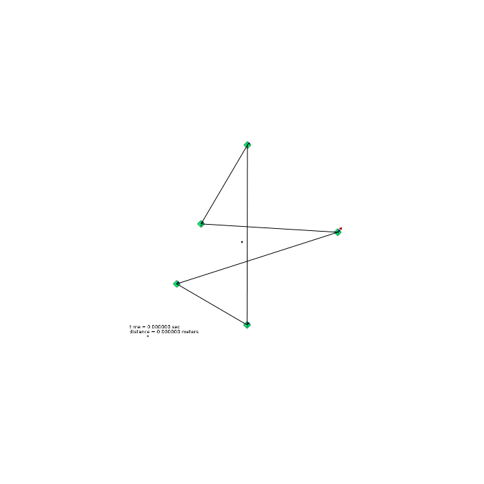 | 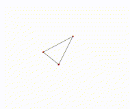 | 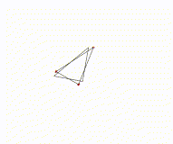 |
Hardware Implementation
Formation with Random Initialization
| Hardware | OptiTrack |
|---|---|
| 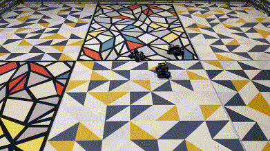 |  |
Avoiding Obstacles
| Hardware | OptiTrack |
|---|---|
 |
 |
Method
| Model Structure | Policy Distillation for Formation Adaptation | Schematic Diagram of the MVE environment |
|---|---|---|
| 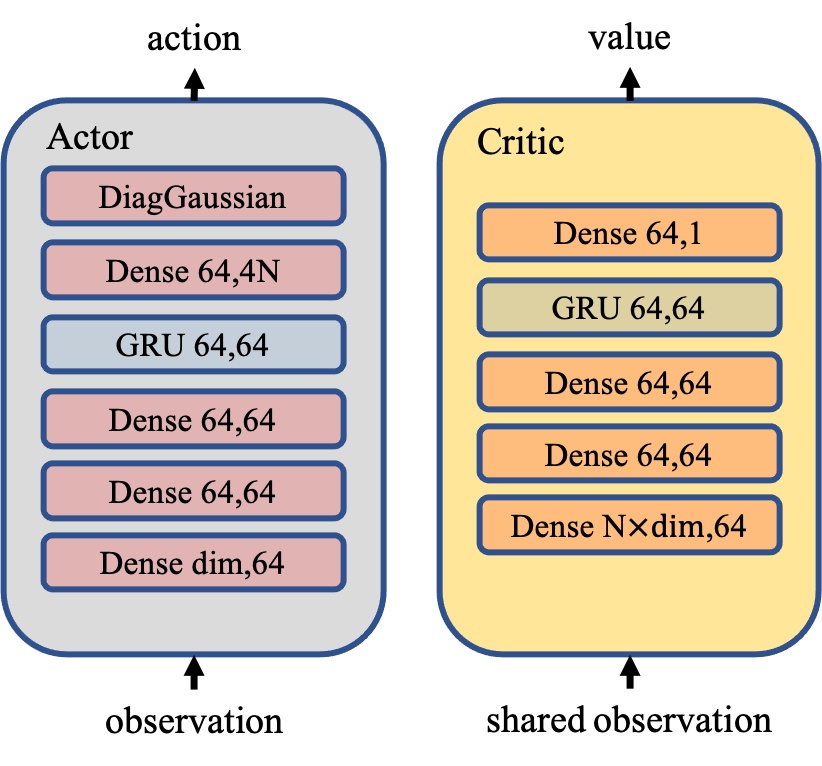 | 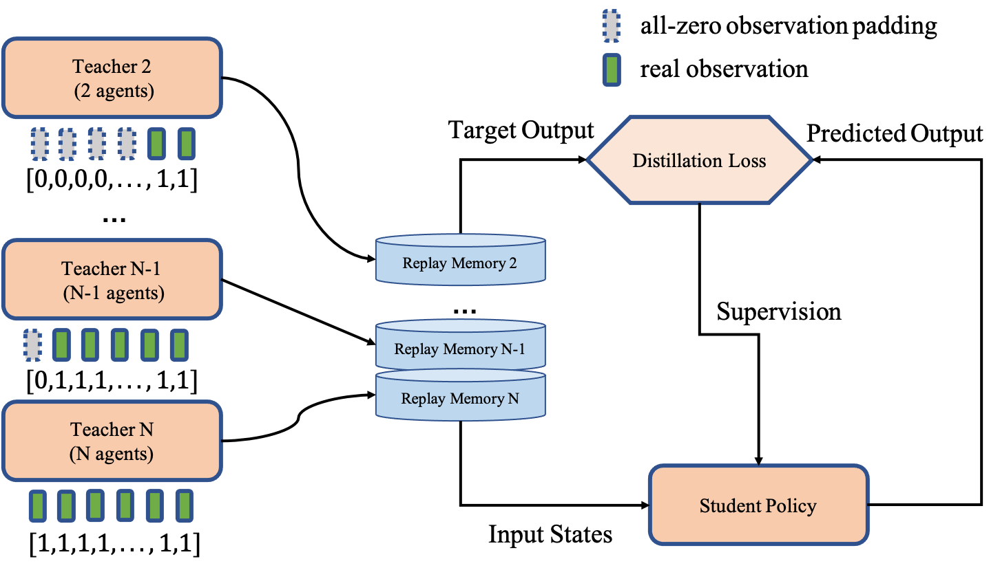 | 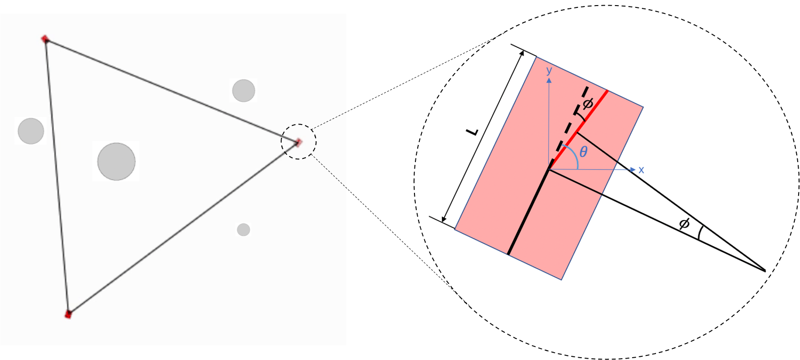 |
Results
| Training |
|---|
| 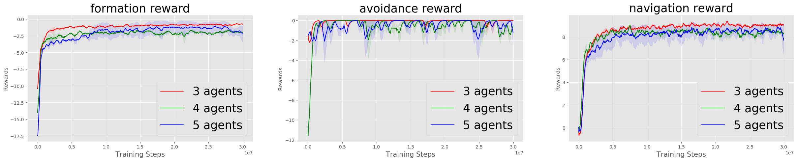 |
| Formation Adapatation | Curriculum Learning |
|---|---|
| 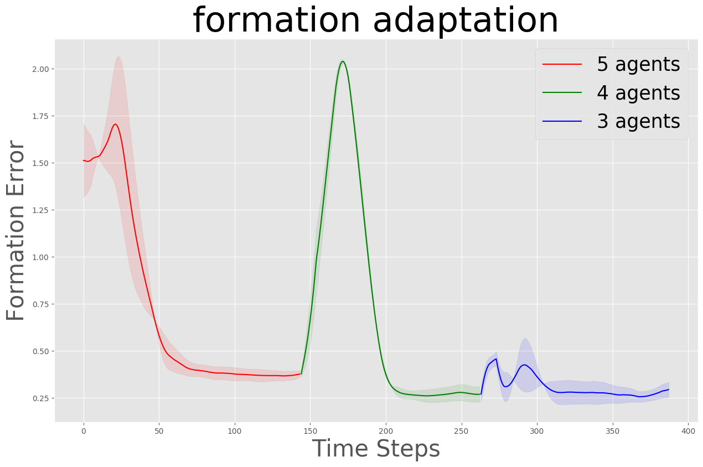 | 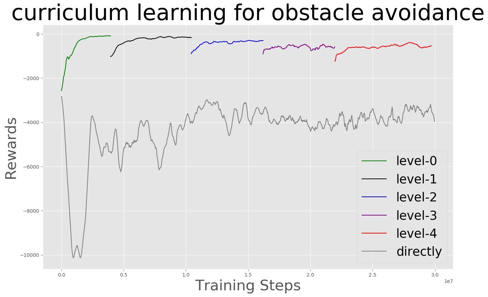 |
| Benchmark |
|---|
| 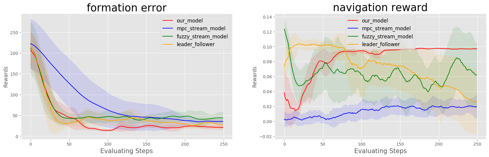 |
Our Related Works
A Deep Reinforcement Learning Based Approach for Autonomous Overtaking